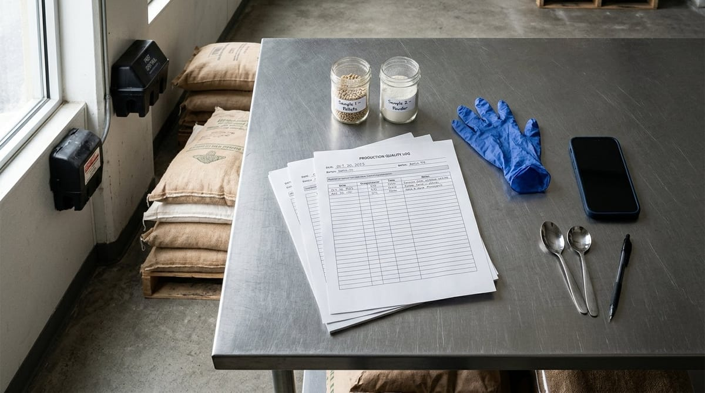

Control de plagas (DDD) en la industria alimentaria

Control de plagas (DDD) en la industria alimentaria
El control de plagas en la industria alimentaria es uno de los pilares sobre los que se sostiene la seguridad de cualquier proceso productivo agroalimentario. Roedores, insectos rastradores y voladores, o aves pueden contaminar materias primas, productos semielaborados y superficies de contacto con microorganismos patógenos, pelos, excrementos y residuos químicos. Por eso, lejos de ser un trámite burocrático, el programa DDD —desinsectación, desratización y desinfección— representa una inversión directa en la reputación de la empresa, en la salud de los consumidores y en la continuidad del negocio.
Qué es el control de plagas (DDD) y por qué BRCGS e IFS lo exigen como prerrequisito
Las siglas DDD agrupan tres disciplinas complementarias. La desinsectación combate insectos como cucarachas, moscas, polillas de los cereales o gorgojos. La desratización se centra en el control de roedores —ratas y ratones— que suponen una amenaza especialmente grave por su capacidad de contaminar grandes volúmenes de producto en poco tiempo. La desinfección, por su parte, elimina o reduce la carga microbiana en instalaciones y equipos, actuando de forma sinérgica con los planes de limpieza.
Las normas de certificación privada más demandadas por la gran distribución sitúan el DDD dentro del bloque de programas de prerrequisitos (PPR). Tanto BRCGS Global Standards (BRCGS, s.f.) como IFS Certification (IFS, s.f.) dedican cláusulas específicas al control de plagas en sus respectivos estándares de seguridad alimentaria. En ambos casos se exige que la empresa cuente con un programa documentado, que dicho programa sea ejecutado por una empresa especializada o por personal formado internamente, y que exista evidencia objetiva de todas las actividades realizadas: visitas de la empresa externa, cebos colocados y revisados, trampas activas, incidencias detectadas y acciones correctivas derivadas.
Desde el punto de vista legal, el Reglamento (CE) n.º 852/2004 relativo a la higiene de los productos alimenticios (Reglamento [CE] 852/2004, 2004) establece que los operadores de empresa alimentaria deben mantener sus instalaciones limpias, en buen estado de mantenimiento y libres de vectores de contaminación. El control de plagas es, por tanto, una obligación legal antes de ser un requisito de norma privada. Si en tu empresa todavía tratáis el DDD como un servicio contratado del que no guardáis apenas registros, es el momento de replantearlo. Puedes ampliar esta perspectiva en nuestro artículo sobre prerrequisitos PPR, la base de un APPCC sólido.
Puntos críticos de vigilancia: recepción, almacén, líneas de producción
No todas las zonas de una planta alimentaria presentan el mismo riesgo de plaga. Identificar los puntos críticos de vigilancia es el primer paso para distribuir correctamente los dispositivos de control y orientar las inspecciones periódicas.
Zona de recepción de materias primas. Las puertas de muelle y los muelles de descarga son las principales vías de entrada tanto de insectos voladores como de roedores. Cada camión que llega puede traer plagas ocultas en los palés, en el embalaje o directamente en la mercancía. Las trampas de captura múltiple para roedores y los detectores de insectos voladores (DIV) deben estar presentes en este perímetro y revisarse con mayor frecuencia que en otras zonas.
Almacenes de materias primas y producto terminado. Los almacenes son el entorno ideal para las plagas: temperatura estable, presencia de alimento y escasa perturbación humana durante las noches y fines de semana. Los cebos rodenticidas deben colocarse en el perímetro exterior y en el interior a lo largo de las paredes, correctamente anclados y señalizados para evitar confusiones. En almacenes de productos secos o cereales, la monitorización de insectos de almacén —gorgojos, polillas— mediante feromonas es una herramienta de gran sensibilidad que permite detectar problemas antes de que se conviertan en infestaciones.
Líneas de producción. En las áreas de producción el uso de biocidas está muy restringido para evitar la contaminación del producto. Aquí cobran protagonismo las medidas pasivas: mallas en ventanas, cortinas de aire o de láminas en accesos, sellado de juntas y grietas, y una correcta gestión de residuos. Los DIV con luz ultravioleta o con feromonas se instalan en puntos estratégicos alejados de las líneas de envasado para no atraer insectos hacia el producto abierto. La inspección visual periódica por parte del equipo interno de calidad es imprescindible para detectar señales tempranas: excrementos, pelos, marcas de roído o insectos muertos.
Cómo digitalizar el registro de cebos, trampas e incidencias de plagas
Uno de los retos más comunes que afrontan los responsables de calidad es mantener el programa DDD actualizado, trazable y fácilmente consultable en el momento de una auditoría. Los registros en papel se deterioran, se pierden y dificultan el análisis de tendencias. La digitalización del control de plagas aporta ventajas concretas que van mucho más allá del ahorro de papel.
En una plataforma de gestión de calidad como Solved es posible recoger en tiempo real la actividad de cada dispositivo mediante planos interactivos de la planta. Cada cebo o trampa tiene asignada una referencia única; cuando el operario o la empresa externa realiza una revisión, registra el estado —sin actividad, actividad leve, actividad moderada o alta— directamente desde el móvil o la tablet. El sistema fecha y firma automáticamente cada entrada, generando un historial auditado que cumple con los requisitos de trazabilidad documental que exigen BRCGS e IFS.
Cuando se detecta una incidencia, la digitalización permite abrir una no conformidad vinculada al dispositivo afectado, asignar un responsable y fijar un plazo de resolución. La incidencia queda ligada al plano, al historial del dispositivo y al parte de la empresa externa, de modo que en cualquier auditoría es posible demostrar no solo que se detectó el problema, sino cómo se gestionó y qué acciones correctivas se tomaron. Este enfoque conecta directamente con la gestión integral de las limpiezas y desinfecciones, que puedes explorar en nuestro artículo sobre el plan de limpieza y desinfección clave para la industria alimentaria.
Además, el análisis de datos históricos permite identificar estacionalidades —mayor actividad de insectos voladores en verano, mayor presión de roedores en otoño— y ajustar proactivamente el programa antes de que la presión de plaga aumente, en lugar de reaccionar cuando el problema ya es visible.
Qué pide un auditor sobre control de plagas
Cuando un auditor de BRCGS, IFS u otra norma GFSI llega a tu planta y revisa el programa DDD, busca respuestas concretas a preguntas concretas. Conocerlas de antemano permite preparar la documentación de forma ordenada y transmitir confianza desde el primer momento.
En primer lugar, el auditor verificará que existe un contrato vigente con la empresa de control de plagas, incluyendo el alcance del servicio, los productos biocidas autorizados y los seguros de responsabilidad civil. A continuación revisará el plano actualizado de la instalación con la ubicación de todos los dispositivos, que debe coincidir con la disposición real en planta. Este es un punto donde muchas empresas fallan: el plano se elaboró en su día y nunca se actualizó cuando se modificó el layout de la fábrica.
Después examinará los registros de visitas e inspecciones de los últimos meses, buscando periodicidad coherente con el nivel de riesgo y evidencia de que las incidencias detectadas se cerraron correctamente. También preguntará por la formación del personal interno que realiza las inspecciones entre visitas de la empresa externa: ¿saben qué señales buscar? ¿tienen instrucciones escritas? Por último, evaluará si el programa se revisa periódicamente —al menos una vez al año o tras cualquier incidencia grave— para incorporar mejoras y adaptarse a cambios en la instalación o en el entorno.
Tener toda esta información centralizada y accesible en una plataforma digital marca la diferencia entre una auditoría que genera estrés y una que demuestra el nivel de madurez de tu sistema de gestión de calidad. El control de plagas no es un problema a resolver; es un proceso continuo a gestionar con método, datos y las herramientas adecuadas.
Referencias
- BRCGS. (s.f.). BRCGS Global Standards. https://www.brcgs.com/
- International Featured Standards. (s.f.). IFS Certification. https://www.ifs-certification.com/
- Reglamento (CE) n.o 852/2004 del Parlamento Europeo y del Consejo, de 29 de abril de 2004, relativo a la higiene de los productos alimenticios. (2004). https://eur-lex.europa.eu/eli/reg/2004/852/oj?locale=es